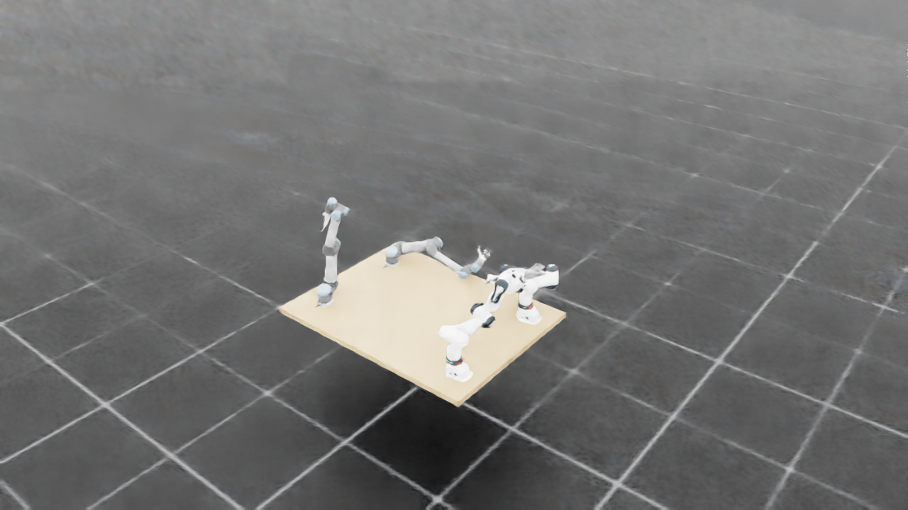
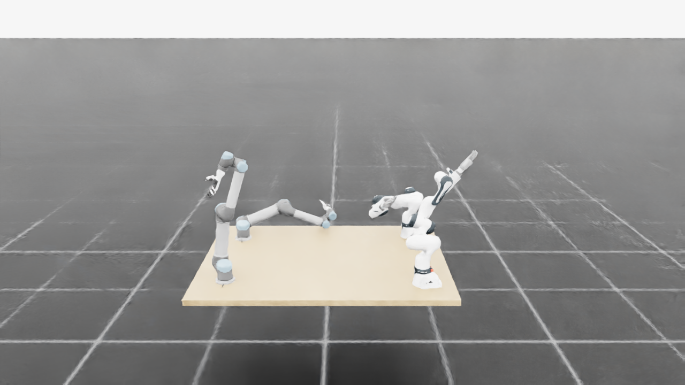
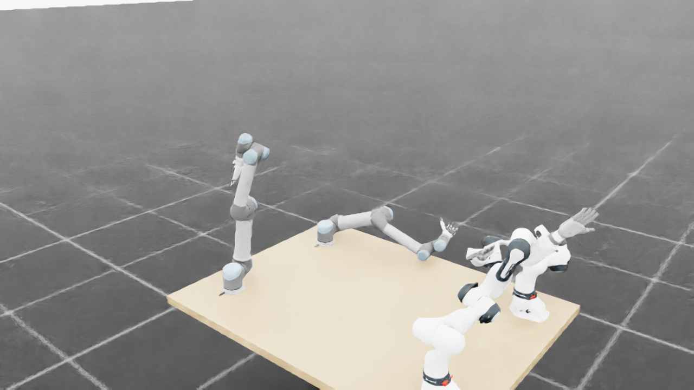
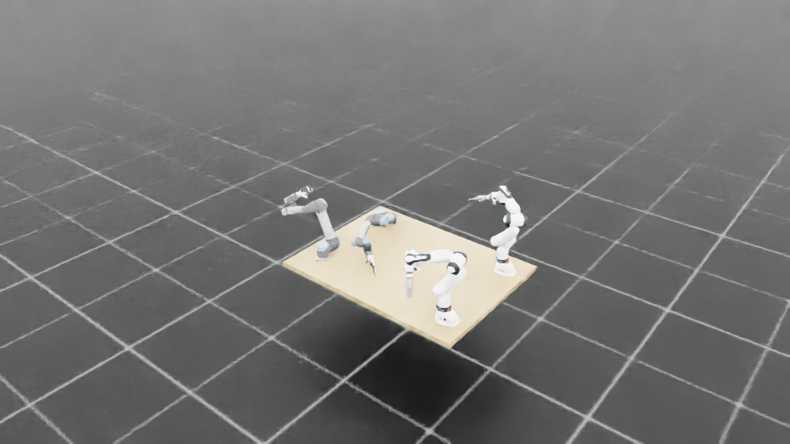
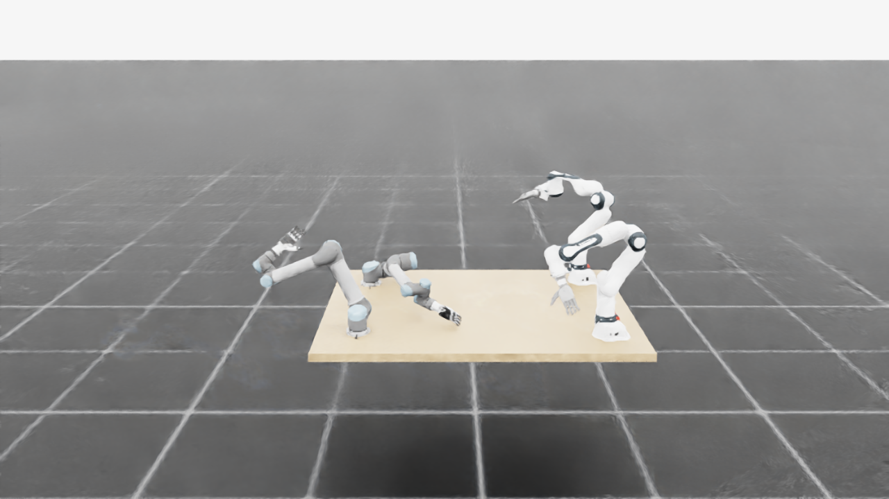
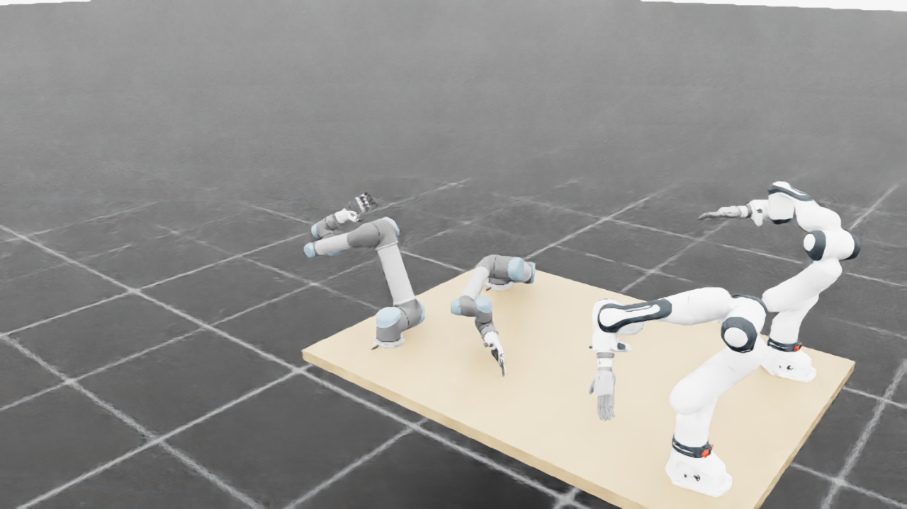

运动响应与完整轨迹审计
候选未通过验收：新增主基线没有的失败
已闭合两批原生候选，共 128 个窗口；与相同初态、速度、根位姿、延迟队列和随机输入的封存基线配对。此次独立分析没有启动新的物理实验，也没有修改运行中的策略。
严格口径：原始非豁免距离 < 0
新增：第 1 批 env 49；第 2 批 env 46
没有靠整段停下来获得这项总数改善
配对结果与验收范围
| 策略 | 窗口 | 严格违规 | 深度违规 < −5mm | 平均路径 rad |
|---|---|---|---|---|
| 封存主基线 | 128 | 12 | 8 | 3.664 |
| 速度/FIFO 候选 | 128 | 9 | 6 | 3.940 |
| 封存次对照 | 128 | 7 | 3 | 3.126 |
128 个候选窗口是本轮新运行；256 个对照窗口复用旧封存数据。独特初态仍为 128 个，这些已知开发案例不能充当新的独立留出验收。完整逐点法向力未记录，属于未知；此前首批向量法向峰值已达 86.547N，不符合该实验预设的 0.1N 门槛。完整 System0、真实夹持带载操作和硬件安全均未验收。
为什么局部退让目标仍不够
全部 9 个首次几何评分失败事件均完成原生 q/qd、实际施加目标、六槽 FIFO 与控制输出的精确绑定。其中 1 个初态已有负间隙，8 个在运行中首次几何评分失败。后者涉及的 10 条约束全部被选中，实际施加及队列目标在冻结当前 Jacobian 中全部指向远离障碍物，仍然失败。下一版需要验证目标到达后的真实加速、减速、停止距离、几何误差与接触权限变化；局部投影残差接近零不是未来安全证明。
新增案例 env 49：U 左前臂对桌面，原始间隙约 0.9mm → −2.2mm；当前速度仍在靠近。目标送达与机械臂停止之间的响应尚无可信边界。以下虚线只是当前速度外推，与组合准入机制不同，不能用它的漏报数代替 System0 的漏判率。

全轨迹预测误差
对两批所有 9,021 条原始约束和 960 步轨迹计算被动预测：d[t] + h × dt × v[t] 对照实际 d[t+h]。仅统计起点间隙非负、起点和终点均非豁免的观测。所有原始评分逐帧重建结果精确一致。
| 预测步数 h | 相关观测数 | 未来负间隙观测 | 外推未预测负间隙 | 平均绝对误差 mm |
|---|---|---|---|---|
| 1 | 1,106,453,646 | 12 | 0 | 0.147 |
| 6 | 1,100,670,287 | 33 | 5 | 1.241 |
| 7 | 1,099,514,843 | 33 | 11 | 1.514 |
| 18 | 1,086,812,164 | 25 | 25 | 4.789 |
这些观测高度相关，不是十亿个独立实验。6 步对应 FIFO 目标送达开始，7 步对应接收该目标后第一个完整宏步的下一采样边界；改变预测步数本身尚未被验证能修复失败。完整分距离带、分约束类别统计见 gates.json。
全部首次几何评分失败
| 批次 / env | 首次 step | 原始约束行 | 事件类型 |
|---|---|---|---|
| 1/58 | 0 | 8585 | 初态已有负间隙 |
| 1/38 | 189 | 9020 | 原始间隙穿零 |
| 1/23 | 285 | 8977, 8979 | 原始间隙穿零 |
| 1/18 | 415 | 8979 | 原始间隙穿零 |
| 1/13 | 462 | 8916 | 原始间隙穿零 |
| 1/47 | 517 | 8917 | 接触豁免撤销 |
| 1/49 | 894 | 8886, 8887 | 原始间隙穿零 |
| 2/15 | 171 | 8909 | 原始间隙穿零 |
| 2/46 | 840 | 8917 | 原始间隙穿零 |
第 1 批 env 47 的间隙在此前已为负，但处于接触豁免；撤销后首次计为违规。报告保留这个事件，区分原始距离穿零与接触权限变化。
实际随机运动覆盖
候选各关节每窗口平均活动跨度占软限位范围约 2.60%–9.95%。这是关节边际活动范围，不能证明联合操作空间覆盖充分。下一轮需单独覆盖速度、队列方向反转、极限附近状态、接触许可切换及带载状态，并报告实际采到的覆盖。

两个新增失败的原生画面
来自本次运行的宏步后状态，复制保留原图；没有重跑物理或把接触微步峰值标成相机拍摄瞬间。












可复核证据与下一版条件
完整结果 · 逐窗口配对账本 · 第 1 批预测审计 · 第 2 批预测审计 · 第 1 批原生时序 / 权限核对 · 第 2 批核对 · 原图来源
下一版运动响应实验与验收条件 已列出：不可撤销队列、执行器响应、停止与非线性误差、权限撤销、完整逐点力、已知案例回归和新种子留出。这是待冻结、待执行的方案，不计作已做实验。
原始大体量 native 流保留在登记的本地目录；本页发布派生诊断、脚本和精选原图，尚非全量原始流的公开归档。门槛是本项目的预注册实验规则，不代表外部安全认证。